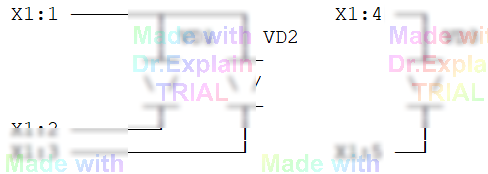
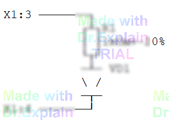
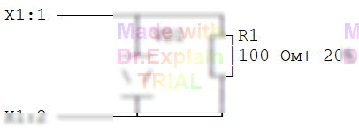

3.2 Контроль нелинейных элементов (команда НЭ)
Команда НЭ измеряет падение напряжения на нелинейном элементе
(диоде, транзисторе и т. п.) при заданном токе обтекания в прямом и обратном включении.
Формат:
НЭ ток, Uконтр, Umin<V<Umax *+X…*-X…*Пример 1: проверка двух диодов
На рисунке показаны два диода в отдельных цепях:

Команда:
100 НЭ 2мА, 4В, 0.5< V< 0.7 *+X1:1,X1:2,X1:3 *-X1:5,X1:4*2мА— ток обтекания;4В— напряжение контроля;0.5- фрагменты списка начинаются с «
+» или «-» для указания полярности на общей точке; - «
*» отделяет фрагменты списка точек.
Пример 2: учёт последовательно включённого резистора
На рисунке показан последовательно подключенный диод и резистор:

При прямом включении к падению на диоде добавляется падение на резисторе R1:
- минимальное: (1 кΩ–20 %)·2 мА = 0.8 кΩ·2 мА = 1.6 В → 0.5 В+1.6 В = 2.1 В;
- максимальное: (1 кΩ+20 %)·2 мА = 1.2 кΩ·2 мА = 2.4 В → 0.7 В+2.4 В = 3.1 В.
Команда:
100 НЭ 2мА, 4В, 2.1< V < 3.1 *+X1:1,X1:2*Пример 3: запрет обратной проверки + проверка резистора
На рисунке показан диод с шунт‑резистором

Команды:
100 НЭ Н,20мА, 4В, 0.5< В < 0.7 *+X1:1,X1:2*110 КС R=100 Ω±20% *X1:2,X1:1*
Ключ Н запрещает проверку в обратном включении (т. к. резистор шунтирует диод),
поэтому отдельно проверяем R1 командой КС.
В КС первой указывается точка, на которую подаётся «минус» омметра.